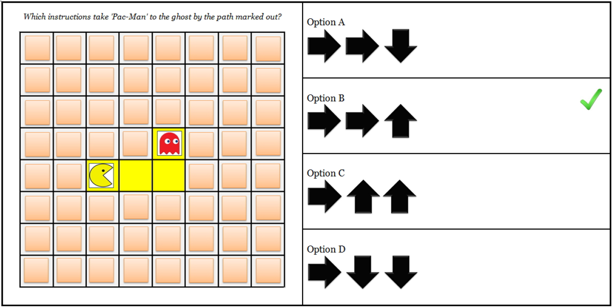

In the following you will take part in a short Experiment which involves reasoning about images.
After that you will take part in two short quiz. The first one is a verbal analogies test containing 10 questions. The second one is a computational thinking test containing 5 questions. Before every quiz you will get instructions with examples that show you what to expect. You will need approximately 15 minutes in total.
Please
pay attention. Thanks!
Legal information: By answering the following questions, you are participating in a study being performed by cognitive scientists in the University of Tübingen, Germany. If you have questions about this research, please contact A. Achimova at asya.achimova@uni-tuebingen.de. You must be at least 18 years old to participate. Your participation in this research is voluntary. You may decline to answer any or all of the following questions. You may decline further participation, at any time, without adverse consequences. Your anonymity is assured; the researchers who have requested your participation will not receive any personal information about you.
Please read the instructions carefully!
The story
"Hi, I'm Mary!"
Tomorrow is Mary's birthday and you don't know her well but you want to give her a birthday
present.
But what should you choose? You have the choice between a number of objects and now you want
to find out which one she will like the most.
Instructions for a block
You will see a series of scenarios with one person and three objects. The person will stay the
same over the whole block but the objects and what you want to find out (color, shape or texture) will
change.
For example the texture can be solid, striped or polka-dotted.
One scenario might look like this:
Your first task is to pick an utterance to indicate to Mary which objects to choose from.
The others will get transparent.
Mary then picks one of these objects that correspond to the utterance. She picks the object she likes most.
You get to observe her choice.
You know that she always says what she thinks and that her preferences don't change over time.
So in this example you chose to say "circle" and Mary then picked the blue and striped one:
Your second task is to adjust the sliders according to what Mary likes.
In this example you should ajust the sliders. Does she like blue? Green? Red?
Experiment
The experiment consists of experimental blocks. In each block you will
need to
find a birthday present for a new person.
Let's go!
Suppose you want to find out which
likes the most in the following slides:
chose the object with the yellow frame.
You can choose a single utterance and then watch
select an object. What should you say?
Please choose one of the utterances before you can see the response.
"Hi, I'm !"
Please adjust the sliders according to what you think likes the most.
definitely not
definitely
Please ajust all the sliders according to what you learned about what likes.
If you didn't learn anything just touch all the sliders.
Are you sure you now know 's preferences
for s?
No, I have no idea.
Yes, I'm sure!
Please answer by moving the slider.
You go to the birthday party.
You guessed that 's favorite is
and that
also likes things.
That's why you give a present with a
birthday card.
is
Actually favorite is and second favourite is
but
doesn't like at all.
Block of
In this next block you will meet a new person and you will again have to find out about their preferences
to find a birthday present for them.
As before, you will see a series of scenarios with the person and three objects. The person will stay the
same over the whole block but the objects will change. The person doesn't lie and the preferences
they have will stay the same over the block.
Are you ready?
You have succesfully finished the Experiment!
By clicking on Continue you can proceed to the first Quiz.
Verbal Analogies Quiz
Instructions
A verbal analogy question has four terms in two pairs. You are given the fist complete pair, which establishes the relationship. You must then choose a pair of words whose relationship is most similar to the relationship in the given pair.
One type of verbal analogy question gives the first pair of words and the first half of the second pair, followed by a list of possible matches. This kind of question looks like this:
CLOCK is to TIME as THERMOMETER is to
The four answer choices are all single words. You must choose the one pair that completes a relationship with thermometer that is analogous to the relationship between clock and time.
Another type of verbal analogy question gives the first pair of words, followed by a list of possible matches. This kind of question looks like this:
INTIMIDATE:FEAR ::
In each question, the two capitalized words have a certain relationship to each other. The four answer choices are all pair of words. You have to choose the pair, which has a relationship analogous to the relationship between intimidate and fear.
Before starting the test, you can have a look at one example for each type of question.
Example 1
1. SPEEDOMETER is to POINTER as WATCH is to (A) case (B) hands (C) dial (D) numerals
The correct answer is (B). First consider what a pointer is used for on a speedometer. It indicates speed at a particular moment. A watch uses hands (choice B) for the same general function, that is, to indicate something at a particular moment. In this case, the hands indicate time. Choice (A), case, is incorrect because the watch case has nothing to do with this function. Choices (C), dial, and (D), numerals, are wrong because although the dial and the numbers have to do with indicating time, they don't perform the specific function of indicating something at any one particular moment.
The correct answer is (D).Spelling and punctuation are parts of the mechanics of English. Biology and physics are parts of the field of science. Therefore, the pair of words with the most analogous relationsship to the given pair is answer choice (D). In this type of question, it may help to substitute the colons for words when you read the question in your head. You would read the example like this: "Spelling is to punctuation as _______ is to _______."
Computational Thinking Test
Instructions
In the following you will take part in a computational thinking test. Don't worry to solve this you don't need any prior knowledge in computer science and programming. You will be given a picture with a main-character and a path which this character wants to follow. To the right of this picture there will be given four different options of instructions. One of those instructions will match the given scenario and this is the instruction you have to find.
Before starting the test, you can have a look at two examples so you can familiarise yourself with the kind of questions that you will find, and the characters that will appear.
Example 1
In the first example you are asked which instructions take 'Pac-Man' to the ghost by the path marked out. That is to take 'Pac-Man' EXACTLY to the square where the ghost is (without going over or stopping short), and strictly following the path marked in yellow (without touching the walls, represented by the orange squares).

The correct answer is (B).
Example 2
In the second example you are asked again which instructions take 'Pac-Man' to the ghost by the path marked out. However, in this question the options are presented as groups of instruction blocks rather than arrows.
Remember that the question asks you to take 'Pac-Man' EXACTLY to the square where the ghost is, and strictly following the path marked in yellow.
The correct answer is (C).
Additional information
Answering these questions is optional, but will help us understand your answers.
Did you read the instructions and do you think you did the HIT correctly?
Gender:
Age:
Level Of Education:
Native Language:
Did you enjoy the hit?
We would be interested in any comments you have about this experiment. Please type them here:


 You go to the birthday party.
You go to the birthday party.